Vanessa-Automation is a framework for development in 1C using the BDD methodology.
Project page: https://github.com/Pr-Mex/vanessa-automation
Vanessa-Automation is analogous to the Cucumber to develop on the platform 1C:Enterprise.
Supported platform version:
8.3.6 in compatibility mode 8.2, 8.3.6, 8.3.7, 8.3.8, 8.3.9, 8.3.10, 8.3.11, 8.3.12, 8.3.13, 8.3.14,
8.3.15, 8.3.16.
The treatment is Managed form (it is based) and Usual form.
The usual form is supported in limited format. Ie errors fixed - new features are added rarely. But you can add your desired features yourself.
Topics:
1 . Rules for writing feature files.
1.1 Main section of the feature file.
1.1.1 the title of the feature
1.1.2 Scenario
1.1.3 Structure of the script
#Тег @tree
#Тег @exportscenarios
1.4 Transmission in the step table.
1.5 the Challenge of the structure of the script as a nested script.
1.6 Transmission parameter table (table) in the nested scenario.
2. How to load the feature file. Tags.
3. How to run the feature file to run. Debug.
4. How to create epf file based on the feature file.
5. Description of the settings on the tab Service.
* The opening features in the text editor
6. Asynchronous calls
7. As to report, Allure, jUnit, Cucmber report.
8. The record of the user activity.
9. How to get state of the form TestClient.
10. How to connect your library.
11. How to share your steps with your colleagues for group development.
12. Basic operations when working with TestClient.
12.1 How to compare a table document by reference.
13. How to create avtoinstruktory in HTML format, MD.
14. How to create autovideosink.
15. How to find out error details.
16. Scripting in other languages.
17. List of export procedures and functions.
18. The launch of Vanessa-Automation on CI.
19. Manual for contributers.
20. SikuliX.
20.1 Installing SikuliX
20.2 SikuliX server
21. Working with global variables.
1 . Rules for writing feature files.
1.1 Main section of the feature file.
The Feature file needs to be written in the language Gherkin.
The Feature file contains two main sections - a header feature and its scenarios.
Title.
The title features the service contains a section Directive that indicates the language (Russian, English, etc.) features.

Further, the header usually are tags that apply to all the features (there are more tags that relate to your specific scenario).

Next comes the part where keyword is used Functionality or Functionality and the title features.

Next comes the part, which briefly answers three questions: who wants what he wants and why this is necessary (business use).

Next is an optional section Context. It usually describe the steps that prepare the execution of the script, but directly do not apply to him.
In one feature file can be many scenarios, and section Context will be executed before each scenario.
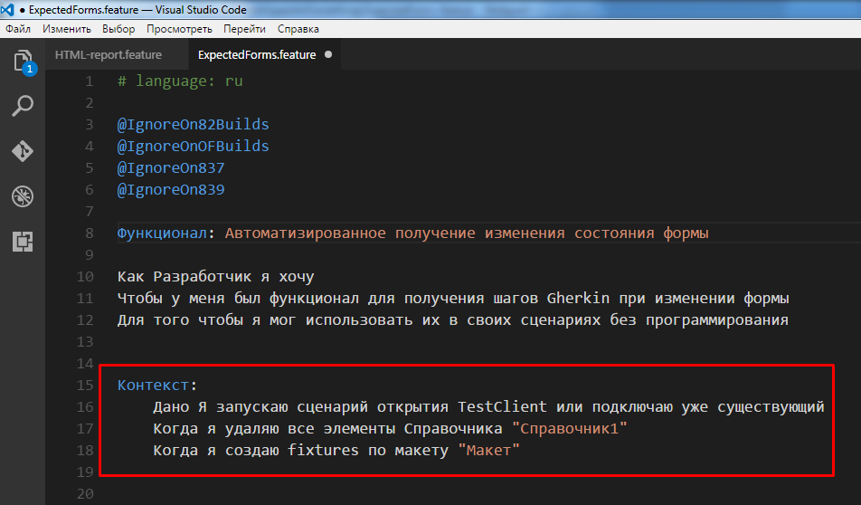
Next comes the part that can be either simple scripts or scripts of a special format, which in Russian translation "Scenario Outline" called "Scenario structure".
Scenario.
A common scenario begins with the keyword "Scenario:"followed by the script name.

Next come the steps. Each step should begin with key words such as This, When, Then, And, Then etc.
Full list of keywords for each language can be found here: https://github.com/cucumber/gherkin/blob/master/gherkin-languages.json#L2372
Restrictions on the number of keywords steps.

Steps can have parameters of primitive types - number, string, date.
The number is written as is.
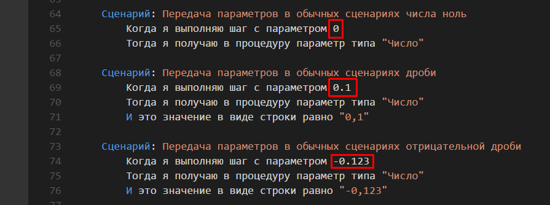
Dates can be specified in two formats
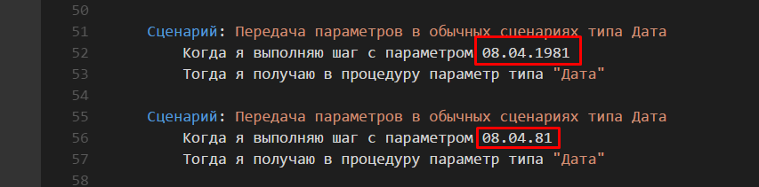
Strings must be enclosed in either apostrophes or quotation marks.

For strings, the rules of escaping.
\' - apostrophe means
\ "means quotation mark
\ \ means a single backslash (\)
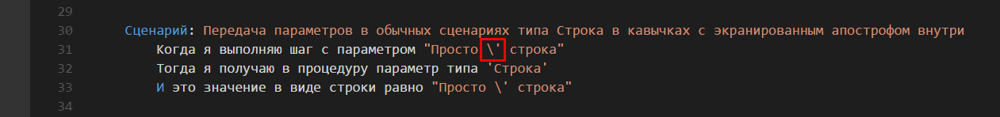
The structure of the script
The structure of the scenario allows that some parameters in the steps are indicated in the special brackets.
Such parameters must be described in the table that comes after the structure of the script begins with the keyword The examples.
Thus, for each row in the table Examples will be performed yourscript fromits a set of parameters.
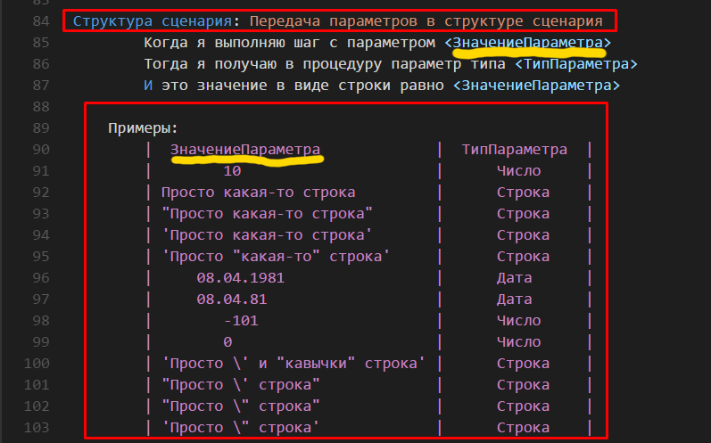
1.2 Tag @tree
Vanessa-Automation can work with advancedsyntax scripting languageGherkin. Call it Turbo Gherkin.
If the header feature tag specified @treethen the parser will feature in a special way to interpret the indentation (Tab characters, spaces not allowed!!!) in the text.
The steps will form a tree of steps. I.e. steps with large amount of padding will be considered to be nested. Like in python.
It helps to structure text feature file.


Thus, some of the steps were inside of other steps. Step, which is a branch of the tree (framed in the picture) - will not be executed.
1.3 Tag @exportscenarios
If the header feature tag specified @exportscenarios, then it becomes possible to call one script from another (and transfer your settings).
For example, there is a script that contains the step "When I open Visual Studio Code":

And next to him (or in a subordinate directory or in the directory of libraries) is another feature file, which is specified tag @exportscenarios it has a script named "I open the Visual studio code".
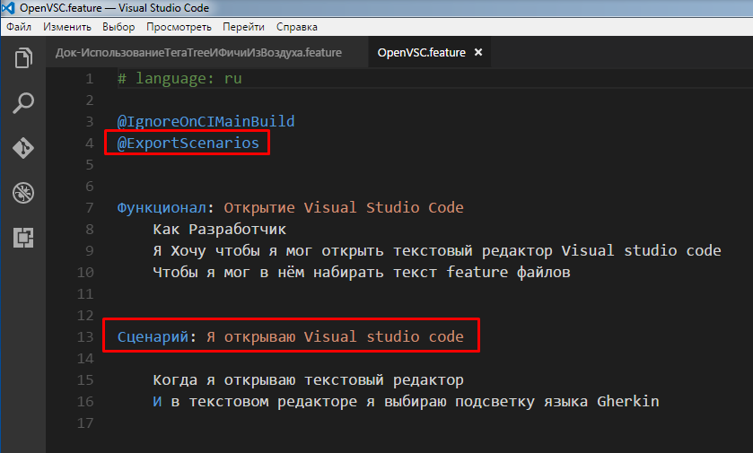
Then if you load the first scenario in Vanessa-Automation - step "When I open Visual Studio Code" loaded like a tree branch.
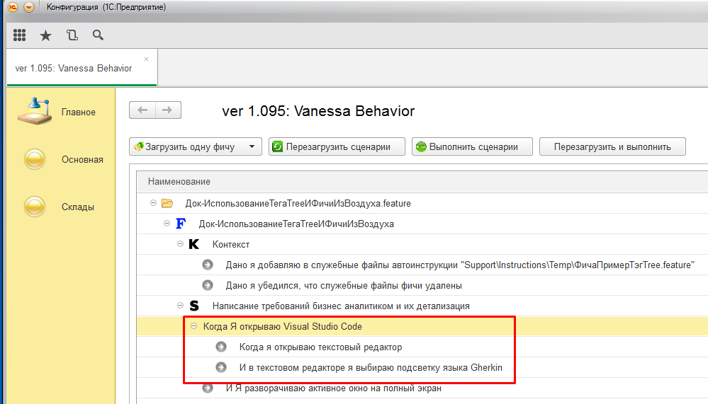
To pass a normal parameter in the slave scenario, it is necessary that a string with the name of the script contained parameters. For example, there is here such script:

It is possible to pass your parameter Filename.
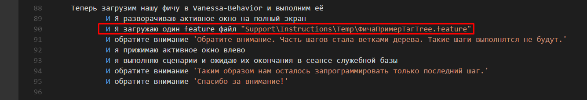
Then Vanessa-Automation it will appear like this:

2. How to load the feature file. Tags.
Vanessa-Automation allows you to load either a single feature file (Ctrl+F2) or feature files from a directory (Alt+F2).
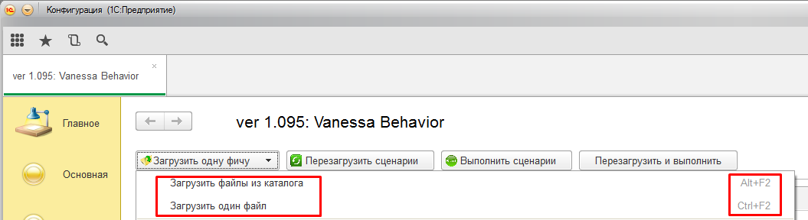
If you select "Load single file" - if feature file is loaded, despite the presence of tags.
If you select "Download files from the catalog" - then variants are possible, depending on the tags in the settings Vanessa-Automation.

If the completed list of "excluded tags" - then if the feature file is specified a tag in the header feature, the entire feature file will not be loaded. If a tag was specified for one or more scenarios
these scripts will not be loaded, and the rest will be loaded.
If the completed list of "Tags to run" - then if this feature tag is not found anywhere else - the whole feature file will be ignored. If a tag is in the header of the feature, then it will download all scripts from feature.
If a tag is specified with one or more scripting then will only load these scripts.
3. How to run the feature file to run. Debug.
Taking all the scenarios, click on the button "Run scenario".
If you made changes to epf or feature, then you must click on "Restart scenarios". Otherwise will use the old version of features and treatments.
With constant changes in the network or in the epf - easy to use "Reload and run".
Also Vanessa-Automation you can use the following start options features on performance (available in the context menu):

1. Run this script from current step (Ctrl+F5). Allows you to run the script from the current step to the end of this scenario. Other scripts will not be executed.
2. Run this script with the current step with a continuation (Ctrl+Shift+F5). Allows you to run the script from the current step. There will also be scripts executed following the data.
3. Run selected scenario (Alt+F5). Will only execute the script starting from the first step.
4. To reboot and execute the script (Alt+F6). Will re-read the data feature files, the epf files and will only execute this script, starting with the first step.
5. Run scenarios of that feature (Ctrl+Alt+F5). You have completed all the scenarios of this feature.
6. Run scenarios (F11). Will only be executed one step features. You can select any step in the tree, the feature and implement it, including the steps of section Context. It is convenient to use when debugging.
7. Open the feature file in the editor. Will open the application associated with the extension feature.
8. Open catalog feature. Opens Explorer with the directory where the feature file.
9. Run scenario from that step whith context save. The script will be executed with current step. This will flag Save contexts before step invoke on the tab Service and Settingsi.e. the script will remember the values of the contexts of the steps. In this mode it is convenient to do debugging script when steps depend on the values of variables Context and Contextchannel. When you first run the script with this option it is possible to run the script from the beginning, if the flag Save contexts before step invoke were not previously equal True. Subsequent runs of the script will be executed with the desired step.
10. Switch to features. Tree features be minimized to lines features.
11. Switch to scenarios. Tree features be minimized to the lines of the script.

12. Breakpoint (F9). The row step will be the mark of the breakpoint. Script execution is aborted at this step, the step will fail. Further, it is convenient to debug in single step (F11).
13. Remove all breakpoints (Ctrl+F9). Removes all breakpoints from the tree.
4. How to create epf file based on the feature file.
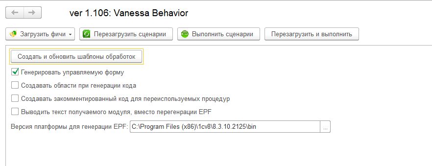
1. If we work in managed forms - have to put the flag "Generate managed form".
2. If you set the flag "Create regions with generated step code"inside the epf will be created in the code pane.

3. Flag "To create commented out code for reusable procedures"now is not used.
4. Flag "Put text module. instead regenerate and update step defintion"- displays the module in a text document without creating the epf.
5. If epf already exists, then it will add new steps. In this case the existing procedures, functions, layouts, etc. in the epf will continue.
6. Epf will be created with the same name of the file and the feature file.
7. The EPF is created by using standard means of the platform. In the field "Platform version for generating EPF"you have to specify the path to the directory bin need platform version 8.3.10 or higher.
8. Epf will be created in the directory "step_definitions"that will be located in the directory of the feature file.
9. Each epf must have a unique value in the field "Name". If you copy (not move) the epf in a different directory, then you have to enforce uniqueness of this field.

The field "Command to open the feature in a text editor".
Allows you to specify a command that will be called to open the feature in a text editor.
In contrast to the simple opening of the file, allows you to jump instantly to the desired line of the file.
Example commands:
NotePad++: "C:\Program Files (x86)\Notepad++\notepad++.exe" %Feature% -n%LineNumber%
VsCode: "C:\Program Files (x86)\Microsoft vs. Code\code.exe" -g %Feature%:%LineNumber%
Examples of commands are also available from the context menu of the field.

1. To generate the report in the format of Yandex Allure you need to fill in these settings

2. When a report supports the Directive that can be specified in the feature file.
For example:
#report.feature=уровень1
#report.story=уровень2
The values of these directives can be arbitrary.
Thus it is possible to specify the desired hierarchy of the report (first, second and third level of the tree).

To the hierarchy of the report was built right, I need to control the json file to specify settings. For example:
"КаталогОтносительноКоторогоНадоСтроитьиерархию": "./features",
"УровеньОтчета1": "#report.epic=;Каталог1",
"УровеньОтчета2": "#report.feature=;Каталог2",
"УровеньОтчета3": "#report.story=;of Kasanari"
In this example, to compute the first hierarchy level of the report will first attempt to find the text feature of the file a string of the form "#report.feature=уровень1". If you can't find such a string, then it will attempt to calculate the directory name of the first level relative to the directory parameter (КаталогОтносительноКоторогоНадоСтроитьиерархию) in which there are feature files (the second value of the parameter "УровеньОтчета1" = Каталог1).
Also for "Eurovignette" you can use the values "Kafici"and "Kasanaru".
The same rules apply on the field "Grouping test suites".
Also, if the json upravljacem a value "ДобавлятьКИмениСценарияУсловияВыгрузки": "True", then the script name will be added the name of the Assembly. This is useful when the same script is run in different environments (builds) and need to get a single report on all assemblies.
3. Reports in a format and Cucumber jUnit report generated similarly.
4. The report generation settings can also be specified via a json file, when Vanessa runs in command line mode.
5. For the structure of the script the name "example" will be taken from Kolonaki "Description" or "Description". If no such column, then the name "example" will be taken from the definition of example in the structure of the script.
8. Entry the actions of the user.
Recording user behavior
1. On the tab "Work with UI" a set of buttons responsible for the interaction with the customer testing of Vanessa Automation.
"Connect TestClient" - start the test client
"Start recording behavior" - launch of customer testing and start recording log of user actions.
"To finish the recording of behavior" - stops recording the user activity log and automatically convert it to a script on the Gherkin language.

Creates a script by recording user actions.
Using this sequence of steps is not comfortable asking employees to reproduce the error in the configuration or the order of working steps to create features and reducing technical debt.
1.On the workbench run configuration in enterprise mode with the option set run /UILogRecorder

2. Click "Start recording"
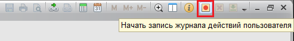
3. Ask the user to reproduce the sequence of actions and at the end click "Finish"

4. Opens the log file of user actions that you want to preserve and pass on to the developer

5. In the future, for receiving the script Gherkin essential in the treatment of Vanessa Automation go to the tab "Work with the UI -> the Source XML". Paste the contents of the log user actions into the appropriate box.
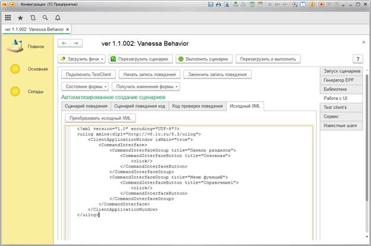
Click "Convert the source XML" and get a finished script.

In the future the script you want to edit – fill in the descriptive part of the script.
Using existing steps
To add steps in the script, simply click the "Add a known step" and add the desired functionality of the script to double click on the desired line.

Run the resulting script
1. Save the resulting script and run as described in section How to load the feature file. Tags.
2. For a quick validation script click the "Prepare a script to performance". In this case loading scenario is similar to using the command "Load features -> Load single file"
Attention. The resulting script is saved in a file in the temporary directory of the operating system. In the case of using the function "Generate EPF"thus obtained processing stored next to the file features.
1. Select - to change the shape. This will generate the text of the steps which describe the state of the active form of TestClient.
2. If prior to receiving state of the form option has been selected - "Remember the state of the form TestClient", then at generation steps will acitvate only the changes between the stored state of the form and the current one.

3. Also to study the state forms you can choose the option "Explorer form". This component allows you to determine which form element is currently active, to obtain information on it and the versions of the text steps.

12. Basic operations when working with TestClient.
It is necessary to understand the following. We have different ways to get the data of a tabular document from the TestClient.
-
If you have the framework version 8.3.8 and higher, then you available method Sophisticatively().
This method allows to simulate the preservation of the tabular document to a file. And thus it can obtain TestManager for processing.
But this method won't work when TestClient is run as a Web client.
Plus this method will not work if a table document is not editable.
So we have the second method: Policitically(<Area>).
The good news: this method allows you to access a cell by its address and to the text.
The bad newsas a workaround for the table document in this way need to know its height and width.
The good newsin the Web client when you call Ostrovitianova(<Area>), when you try to go beyond the boundaries of the layout is returned to the edge.
Thus it is possible to find where the end of the layout, and the user is not required to specify its border.
The bad newsin thin client, this trick does not work. When you try to activate the cell-boundary layout - this proishodit.
Therefore, the user must know the boundaries of the layout in advance, to read it in cells in the thin client.
-
How to read tabular document in your script and compare to expected value:
Read layouts VB uses the following methods:
ПолучитьТабличныйДокументTestClient - returns Tablecellelement
ПолучитьТабДокИзTestClientКакМассив - returns an array
You can use the typical steps of the supply VB, such as:
And Table the document "Requesttermination" equal layout "of Mamacita"
And the region "R1C1:R10C10" table document "Requesttermination" equal layout "of Mamacita"
And table the document "Requesttermination" was equal to:
| Value1 | Value2 |
| Value3 | Значение4 |
-
To summarize the above:
1. If you have a 8.3.8 and higher (8.3.10 better and higher) then you can not specify the reading pane layouts.
VB will be read entirely as a thin client and in the Web.
Ie you don't have to do different scenarios for the thin client and web client.
But the layout should be Available to the user (method Ekusadasi.net()).
2. If you want to compare the part of the layout with the standard - use step
And the region "R1C1:R10C10" table document "Requesttermination" equal layout "of Mamacita" or similar steps
3. If you have a version of the platform less 8.3.8 (not recommended), then, even before I read the layout as a whole, it will be necessary to specify the reading pane through a special step
When I set the reading options pane layout "R1C1:R100C20"
By default, the reading pane is set as "R1C1:R30C20" (30 rows and 20 columns).
Important! If you change the reading pane, it will apply when reading the following table documents.
The first thing to do:
The precise basic principles:
1. Each step in the instructional videos will be announced and it will be added subtitles.
2. Every step of the video can be scaled in time (i.e. become longer or shorter). It is necessary to synchronize the visuals and voice acting.
3. To make the video insert in any place you want to use the step
And note "the text of the video sequences."
4. All steps will be automatically converted into video sequences (white text on black background). Here is an example.

5. There are special control structures that need to be specified in the text of the script in front of the right step or group.
1) Free text step. autodoc.text
Let the script step: When the command interface, I choose "Basic" "Справочник1"
Then if in front of him (i.e. above the line) write: #[autodoc.text] В интерфейсе \[я\] выбираю %2 и %1 ["" + ТекущаяДата()]
then, when forming the user the text of the step will be:
Interface [I] choose "Справочник1" and "Core" 08.04.1981 01:00
Ie %2 and %1 was replaced by the step options. The expression ["" + Acomadate()] it was calculated through the method Calculate().
And the text \[I\] contained the escaping of the square brackets.
2) Do not include the step in the manual.autodoc.ignorestep If before step or group of steps to write #[autodoc.ignorestep]then he/they will fail, but will not be in the final video file.
3) Disable autoscaling step or group.autodoc.donotscale If before step or group to write #[autodoc.donotscale], then he will not be compressed for time synchronization of voice and video.
4) Make steps single step.autodoc.groupsteps
Suppose that in the scenario there is a group of steps with the text: Just a group of steps
If it to write #[autodoc.groupsteps] В интерфейсе я выбираю Справочник1 и Справочник2 ["" + 11 + 22] then
a) the Entire group of steps is to be perceived as one step.
b) Special video sequences for the group will be created.
C) In the final video, this group will be one step with text In the interface I choose Справочник1 and Справочник2 1122
g) If after the Directive #[autodoc.groupsteps] not specified the text will be used the current name of the group.
5) To delete a slide script.autodoc.ignore.scenarioslide
For the exception of a slide script with text Script. <Script text> it is necessary before the line that declares the script to write #[autodoc.ignore.scenarioslide]
6) Delete the title slide features.autodoc.ignore.featureslide
For the exception of the title slide feature of the file before the line that declares the name of the functionality to write #[autodoc.ignore.featureslide]
7) Delete the final slide, which shows data for the build script.autodoc.ignore.finalslide
For the exception of the title slide feature of the file before the line that declares the name of the functionality to write #[autodoc.ignore.finalslide]
8) To change the voice to a particular step.
In the video settings set the main voice engine and the voice that will be used for scoring instructions.
To change the voice before step, you must specify the voice engine, voice, and intonation (for amazon you can specify the language). Options can be specified:
- short (for Уandex): @YandexTTS: ermil,evil
- deployed @YandexTTS: voice = ermil; emotion = evil
@AmazonTTS: voice = Kimberly; lang = en-US
A short record of the first setting sound, the second emotion, when the expanded record, the order is not important, the parameters are separated by ; .
Yandex have six votes and three emotions, Amazon votes, much more full list can be seen on the page of the audio settings in the drop-down lists.
9) Automove mouse cursor to form element or interface element.
For enable option you have to set flag to "Emulate mouse movements".
If flag is set, when steps execution it will try to find form element or control on screen and move mouse cursor to it.
For searching pictures and moving mouse uses SikuliX. Picture for search generated by text obtained from element shape.
To disable mouse movement in a particular step, it is necessary to use directive #[DoNotMoveMouse].
Let's say you have an error comparison of the two tables. In the tree scenario, it looks like this.
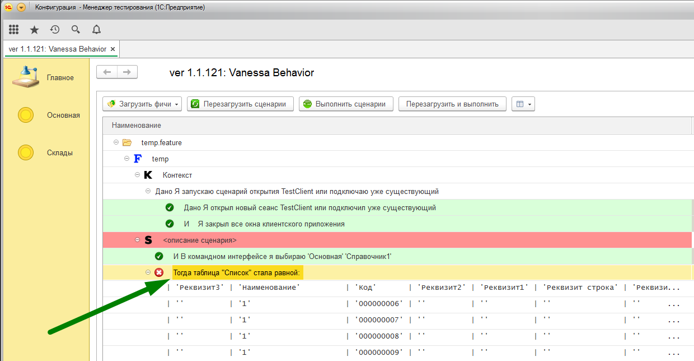
Do double click on the line of the fallen step (arrow). Then the following window appears

This window allows you to see more detailed information about the error.
Also, in that case, if the step is checking the equality of the tables or layouts, you can use the button "Compare table", clicking on which will show a standard window is the table of comparison documents.
If the flag is "Only the text of Jacek exposed" to compare only the text of the cell layouts, without taking into account their design.

Vanessa-Automation allows you to work with scripts in different yahiko.
1. To select the language in which you want to self-fulfilling feature - it is necessary to use the appropriate setting.

2. Further, when Nakhichevani features your script will be automatically translated into the selected language. To work the translation should be filled in the translation file steps located here
{КаталогVB}\locales\Gherkin\ for example, en.mxl.
3. You will also be available button script translation from Russian language into your chosen language.
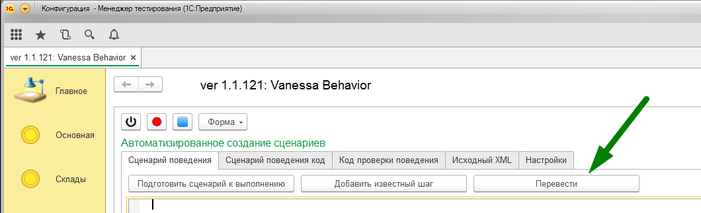
4. When viewing the famous tree of steps - you can choose the option "Show steps in Russian"

This can help English-speaking users with finding the steps in a different language.
5. Also, the Researcher forms will offer you the steps on how aisce that is specified in the settings.

The latest distribution can be downloaded from the link (at the time of writing the current release is 1.1.3)
1. Copy the downloaded file to the directory D:\SikuliX\
2. Run the file and accept the installation

3. In the custom installation, select Pack1. Leave the default language - Python

3. To agree with setting


4. A successful installation will display the corresponding window.

5. To register in system environment variable Path the path to the directory SikuliX (D:\SikuliX).
To check the correctness of a path by launching the console and running the command:
where runsikulix
this displays the path of finding the team

1. SikuliX server need to speed up scripts that repeatedly invoke scripts SikuliX. Thus with the help of Vanessa Automation allows you to write quick scripts that can work interactively with the user's screen.
2. A large part of the scripts SikuliX does not require special adaptation for operation on SikuliX server.
3. To use SikuliX server you need to set the flag "Use SikuliX server" and specify the directory (using the semicolon) scripts SikuliX.

4. In this configuration, the call Vanessa.ВыполнитьSikuliСкрипт() will be redirected to the method Vanessa.ВыполнитьSikuliСкриптЧерезSikulixсервер() (so most of the scripts that are already using SikuliX scripts to alter it is not necessary).
5. This will run a special session SikuliX, if it does not.
6. Will be assembled special SikuliX script, which is a compilation of all scripts that were in the directory (directories) in the parameter "Directory scripts SikuliX". The script will be placed in the first directory with the same name SikuliXServer.sikuli.
7. Scripts taking Argumenty view "sys.argv[1]"there will also be correctly handled.
8. Run SikuliX server Manager are available via a json file. Parameters: "КаталогиСкриптовSikuliX"and "ИспользоватьSikuliXСервер".
1. In Vanessa Automation have the opportunity to work with global variables. They are of two types.
1) Variables that are saved in the service structure Context. They exist for the lifetime of a scenario.
2) Variables that are saved in the service structure Contextchannel. They exist while the open form of Vanessa Automation.
2. In the standard Biblioteca steps Vanessa Automation there are ready steps that allow you to save the desired value into a variable and then use it. For example:
And I remember the value of current field as "VariableName"
And in a field named "Fieldname" enter the value of the variable "VariableName"
3. Possible syntax to save the value of a variable:
And I remember the value of current field as "VariableName" - The variable will be stored in the Context
And I remember the value of current field as "$VariableName$" - The variable will be stored in the Context
And I remember the value of current field as "$$VariableName$$" - The variable will be stored in Contextchannel
4. Possible syntax to read the value of the variable:
And in a field named "Fieldname" enter the value of the variable "VariableName" - the value of the variable will be taken out of Context
And in a field named "Fieldname" enter the value of the variable "$VariableName$" - the value of the variable will be taken out of Context
And in a field named "Fieldname" enter the value of the variable "$$VariableName$$" - the value of the variable will be taken from Contextawareness
5. Variable names must conform to the rules of the room of the values in the Structure (do not use spaces, special characters, etc.)